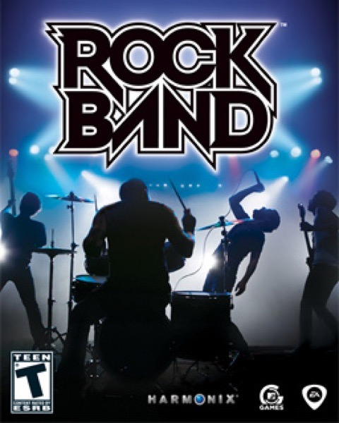

Simulation · 2007
Rock Band
Four instruments, one living room, and an argument about who sings.

Cover: Wikipedia: Rock Band (video game)
Facts
- Released
- 2007-11-20
- Genre
- Rhythm
- Category
- Simulation
- Platforms
- Nintendo, PlayStation, Xbox
- Developers
- Harmonix Music Systems, Pi Studios
- Publishers
- MTV Games